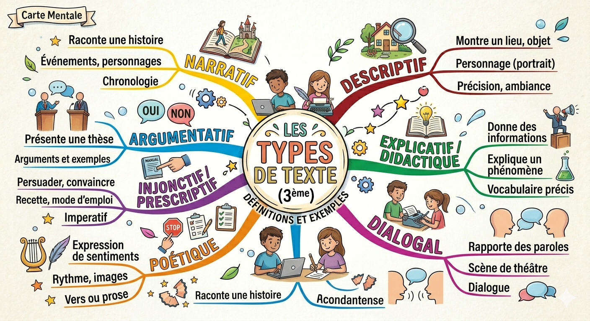
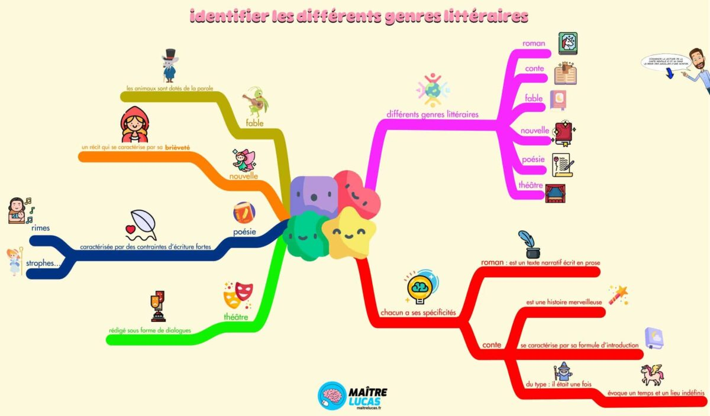
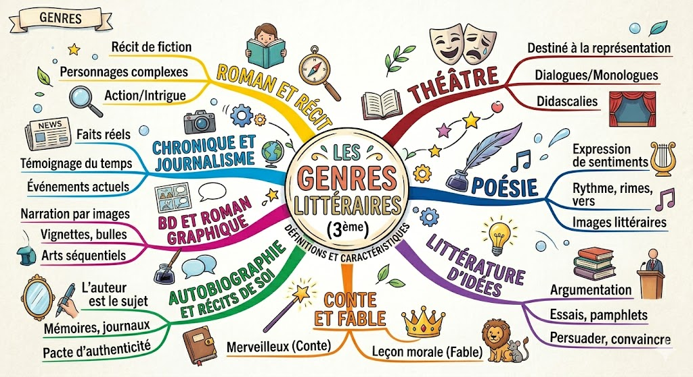

Genre, registre et type de texte
Genre, registre et type de texte
Les 3 grandes notions à ne pas confondre
Pour analyser un texte, on dispose de trois grilles de lecture différentes, qui répondent chacune à une question différente :
Le TYPE de texte
« Comment est organisé le texte ? »
Décrit la structure et la fonction du texte, indépendamment du genre.
Le GENRE littéraire
« Sous quelle forme est écrit le texte ? »
Désigne la catégorie littéraire à laquelle appartient l'œuvre (roman, poème, pièce…).
Le REGISTRE (tonalité)
« Quel effet veut-on produire sur le lecteur ? »
Exprime l'atmosphère et le sentiment que l'auteur cherche à faire éprouver.
1. Les types de textes
Le type d'un texte décrit sa manière d'être organisé et son intention. Un même genre littéraire peut contenir plusieurs types de textes.
2. Les genres littéraires
Le genre désigne la forme littéraire choisie par l'auteur. À l'intérieur de chaque genre, on pose une deuxième question pour en identifier la sous-catégorie.
Le Roman et le Récit
Texte narratif en prose, généralement long, avec des personnages et une intrigue.
- Réaliste / Naturaliste : ancré dans le réel
- Policier : enquête, crime, suspense
- Science-fiction : monde futuriste ou alternatif
- Historique : époque passée reconstituée
- Fantastique : irruption du surnaturel dans le réel
La Poésie
Texte rythmé et harmonieux, jouant sur les sons, les images et les émotions.
- En vers : sonnet, ode, élégie, ballade…
- En prose : poème en prose (Baudelaire)
- Éléments : strophes, rimes, vers, rythme, figures de style
Le Théâtre
Texte destiné à être joué sur scène devant un public, organisé en actes et scènes.
- Tragédie : personnages illustres, destin fatal
- Comédie : vise à faire rire, fin heureuse
- Drame : mélange tragique et comique
- Éléments : dialogues, monologues, didascalies
Conte et Fable
Texte court, souvent fictif, avec une visée morale ou symbolique.
- Conte merveilleux : fées, magie (Perrault)
- Conte fantastique : irruption du surnaturel
- Fable : animaux, morale explicite (La Fontaine)
Autobiographie et Récits de soi
L'auteur raconte sa propre vie. Pacte autobiographique : auteur = narrateur = personnage.
- Autobiographie : récit rétrospectif de sa vie
- Journal intime : écrit au jour le jour
- Mémoires : vie mêlée à l'Histoire
- Autofiction : mélange réel et fiction
Littérature d'idées
Textes qui visent à convaincre ou réfléchir sur des questions morales, politiques ou philosophiques.
- Essai : réflexion personnelle sur un sujet
- Pamphlet : critique virulente
- Lettre ouverte : destinée au public
- Discours : oral, destiné à persuader
3. Les registres (tonalités) littéraires
Le registre traduit l'atmosphère dominante d'un texte et les effets que l'auteur cherche à provoquer chez le lecteur. Un même genre peut employer plusieurs registres.
Tragique
TragiqueEffet : met en scène des situations désespérées où un personnage est voué à la mort ou au malheur inévitable.
Œdipe découvrant qu'il a tué son père et épousé sa mère.
Comique
ComiqueEffet : suscite le rire ou le sourire par des situations absurdes, des jeux de mots, des quiproquos.
Molière tournant en ridicule l'avare dans L'Avare.
Lyrique
LyriqueEffet : exalte des sentiments personnels intenses (amour, nostalgie, mélancolie). Emploi du « je ».
Lamartine pleurant la mort de sa bien-aimée dans Le Lac.
Épique
ÉpiqueEffet : suscite l'admiration pour les exploits d'un héros. Grandeur, courage, bataille, dépassement de soi.
Les batailles napoléoniennes décrites dans La Chartreuse de Parme.
Fantastique
FantastiqueEffet : contient des éléments surnaturels dans un univers réel, provoquant le doute et l'angoisse.
Un homme ne sachant plus s'il rêve dans Le Horla de Maupassant.
Merveilleux
MerveilleuxEffet : présence d'éléments irréels (fées, magie) acceptés sans étonnement. Évasion, rêve.
La citrouille devenant carrosse dans Cendrillon de Perrault.
Satirique
SatiriqueEffet : se moque pour faire réfléchir. Critique sociale ou politique par l'ironie, la caricature.
Voltaire raillant l'optimisme naïf dans Candide.
Pathétique
PathétiqueEffet : émeut, fait pitié, provoque compassion et larmes face à la souffrance d'un personnage.
La mort de Cosette si elle n'avait pas été sauvée dans Les Misérables.
Tableaux récapitulatifs
Pièges à éviter
La méthode pour ne pas se tromper : posez-vous les bonnes questions dans l'ordre !
Étape 1 — TYPE : « Comment le texte est-il organisé ? Quelle est son intention ? » → narratif, descriptif, explicatif, argumentatif ou injonctif ?
Étape 2 — GENRE : « Sous quelle forme littéraire est-ce écrit ? » → roman, poème, pièce de théâtre, conte, essai… ?
↳ Puis : « À quel sous-genre appartient-il ? » (ex : roman policier ? tragédie ? conte merveilleux ?)
Étape 3 — REGISTRE : « Quel effet l'auteur cherche-t-il à produire sur moi ? » → comique, tragique, lyrique, satirique… ?
Confondre genre et type de texte
Erreur classique : dire qu'un roman est un texte « narratif » comme si c'était son genre.
Le roman est un genre. « Narratif » est un type. Un roman peut contenir des passages descriptifs, argumentatifs ou explicatifs sans cesser d'être un roman.
❌ « Ce texte est un genre narratif »
✅ « Ce texte appartient au genre du roman, de type narratif »
Confondre genre et registre
Erreur classique : dire que la tragédie est un registre alors que c'est un genre. Ou que le registre fantastique est un genre.
Astuce : un roman (genre) peut avoir un registre tragique, comique ou lyrique. Le registre « colore » le genre, il ne le remplace pas.
❌ « Ce texte est de genre comique »
✅ « Ce texte est une comédie (genre) de registre comique »
✅ « Ce roman (genre) utilise un registre tragique »
Confondre registre fantastique et genre fantastique
Le genre fantastique désigne une catégorie littéraire (le roman fantastique, la nouvelle fantastique…).
Le registre fantastique désigne l'atmosphère d'angoisse et de doute face au surnaturel, qui peut apparaître dans d'autres genres.
Une pièce de théâtre peut avoir un registre fantastique sans être un « genre fantastique ».
Fantastique ≠ Merveilleux
Merveilleux : le surnaturel est accepté sans surprise ni angoisse. Univers de fées et de magie (contes de Perrault, fables).
Fantastique : le surnaturel irrompt dans un univers réaliste et provoque le doute, l'hésitation et la peur.
Cendrillon → merveilleux (la citrouille devient carrosse, tout le monde trouve ça normal)
Le Horla → fantastique (le personnage ne sait plus s'il est fou ou si un être invisible existe vraiment)
Tragique (registre) ≠ Tragédie (genre)
La tragédie est un genre théâtral (codifié depuis l'Antiquité) avec des règles précises (les trois unités, le héros illustre, la fin fatale).
Le registre tragique est une tonalité qui peut se retrouver dans tout type d'œuvre (un roman, un poème, une nouvelle…).
Un roman de Victor Hugo peut avoir un registre tragique sans être une tragédie.
Identifier le sous-genre : poser la bonne question
Une fois le genre identifié, il faut toujours se poser une deuxième question pour préciser :
- Roman → De quel type ? Policier ? Réaliste ? Historique ?
- Poésie → En vers ou en prose ? Quelle forme fixe ?
- Théâtre → Tragédie, comédie ou drame ?
- Conte → Merveilleux, fantastique ou réaliste ?
- Récit de soi → Autobiographie, journal intime ou mémoires ?
Un texte peut cumuler plusieurs registres
On cherche le registre dominant, mais un texte peut en mélanger plusieurs.
Candide de Voltaire = registre satirique dominant + touches de comique + pathétique
→ On dit : « registre principalement satirique », pas seulement « satirique ».
Type explicatif ≠ type argumentatif
Explicatif : on expose des faits objectifs pour faire comprendre. Pas de prise de position.
Argumentatif : on défend un point de vue pour convaincre. Il y a une thèse.
« La Terre tourne autour du Soleil en 365 jours. » → explicatif
« Il faut préserver l'environnement car notre avenir en dépend. » → argumentatif
Cartes mentales
Cliquez sur une carte pour l'agrandir. Vous pouvez la télécharger pour l'imprimer ou la réviser hors connexion.
Notions clés : genre, registre, type

Les types de textes — 3ème

Les registres littéraires

Les genres littéraires — Maître Lucas

Les genres littéraires — Eyrolles

Les genres littéraires — 3ème (v1)

Les genres littéraires — 3ème (v2)